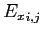
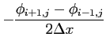
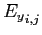
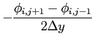

Next: GNU Archimedes Commands Syntax
Up: Coupling between Monte Carlo
Previous: Numerical Resolution of the
Contents
The electric field is easily computed once we have the solution of the static Poisson equation or the NSP equation. The definition of the electric field is as follows
So, in the context of finite-difference approximations, we compute the electric field in the various cells of the grid as follows
|  |
 |
 |
(6.11) |
|  |
|
 |
(6.12) |
These simple expressions are used in GNU Archimedes and, even if very simple, they are accurated and robust.
Didier Link
2007-05-18